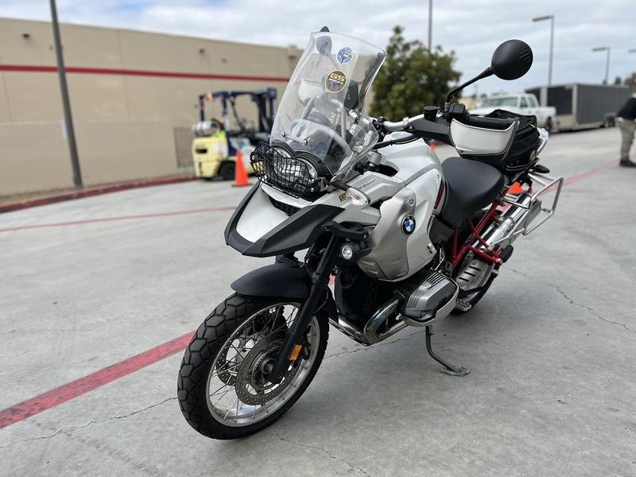
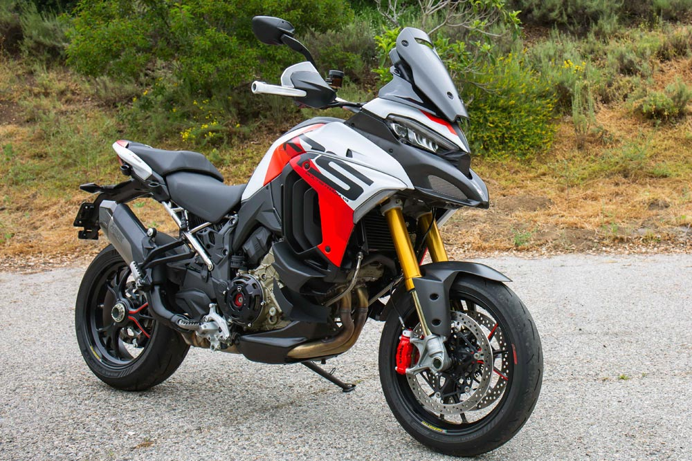

Tere tulemast Mario mootorrataste proovisõitude blogisse!
Siit leiad minu kokkuvõtted proovisõitudest erinevate matkamootorratastega Eesti teedel. Kui sind huvitavad mootorrattad ja matkamine, siis oled õiges kohas!

BMW GS 1250 Adventure
Võimas ja mugav matkaratas pikkadeks sõitudeks. Proovisõit Lõuna-Eestis andis hea ülevaate tema võimekusest.
Loe edasi
Honda Africa Twin
Tõeline kruusakuningas – Africa Twin sai proovile pandud Põhja-Eesti metsateedel ja sai suurepäraselt hakkama.
Loe edasi

Ducati Multistrada V4
Luksuslik ja sportlik matkaratas, mis sobib ideaalselt Eesti kurvilistele maanteedele. Test Lahemaal ei valmistanud pettumust.
Loe edasi